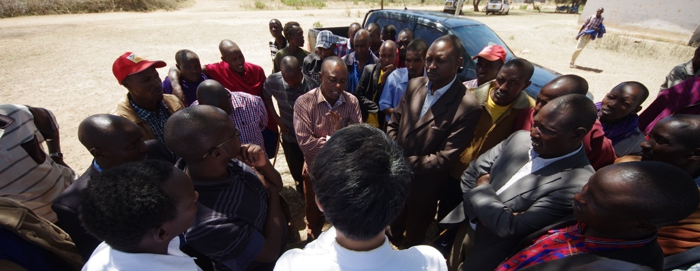

Book Projects
In the aftermath of the refugee crisis caused by conflicts in the Middle East and an increase in migration to Europe, European nations have witnessed a surge in discrimination targeted at immigrant minorities. To quell these conflicts, some governments have resorted to the adoption of coercive assimilation polices aimed at erasing differences between natives and immigrants. Are these policies the best method for reducing hostilities? Native Bias challenges the premise of such regulations by making the case for a civic integration model, based on shared social ideas defining the concept and practice of citizenship.
Drawing from original surveys, survey experiments, and novel field experiments, Donghyun Danny Choi, Mathias Poertner, and Nicholas Sambanis show that although prejudice against immigrants is often driven by differences in traits such as appearance and religious practice, the suppression of such differences does not constitute the only path to integration. Instead, the authors demonstrate that similarities in ideas and value systems can serve as the foundation for a common identity, based on a shared concept of citizenship, overcoming the perceived social distance between native and immigrants.
Addressing one of the most pressing challenges of our time, Native Bias offers an original framework for understanding anti-immigrant discrimination and the processes through which it can be overcome.
Endorsements
"This excellent book addresses one of the most important issues of our time: how to overcome the discrimination of immigrants and, ultimately, how to secure their successful integration into new societies. This is a major contribution not only to the study of immigrant discrimination and integration, but also to intergroup relations more broadly."― Peter Thisted Dinesen, University of Copenhagen
"Based on an impressive battery of original field experiments and surveys, this work holds a powerful message: bias and discrimination against Muslim immigrants are widespread and persistent in Europe. Native Bias shows that these shortcomings can be overcome by shared civic norms and identities."― Christian Joppke, University of Bern
"This is a terrific book―one of the best I’ve read in a long time. Polished, theoretically sophisticated, and logically structured, it brings to bear new evidence and approaches on a critical contemporary topic."― Daniel N. Posner, University of California, Los Angeles
Severed Connections: Intraparty Politics and Representation in Africa

Book Abstract
How does intraparty politics shape the quality of representation in new democracies? This question has seldom been addressed in existing work on political parties in the developing world, which has traditionally emphasized the weakness of the party system and partisan attachments, as well as mobilization strategies based on ascriptive loyalties or clientelistic relationships as the key barriers to representation. My first book project studies this important question by reorienting our focus to the interaction between elected representatives and their party leadership, whose support is critical for their electoral survival. I show that the party leadership is motivated to capture the candidate selection process to cultivate the ideal slate of representatives that allows them to simultaneously pursue their party's electoral success while diffusing threats against their position within the party's ranks. The party leadership's machinations, combined with an electoral geography that often amplifies the centrality of candidate selection, culminate in the emergence of two disparate pools of elected representatives; a majority mostly disinterested in being responsive to their constituents, and a smaller minority who remain steadfast in their commitment to their democratic sovereigns. Drawing on 18 months of fieldwork in Kenya, my project combines insights from in-depth interviews of more than 80 past and current elected representatives and senior party officials, analyses of original surveys, census data, election returns, archival materials, ethnographic observation within party organizations, a series of experiments conducted on more than 3000 primary voters in Kenya, and a text analysis of a corpus of 51000 newspaper articles.
My argument begins from a simple premise: that to understand the relationship between intraparty politics and representation is to understand what types of demands are placed on elected representatives, and by whom. In addition to demands voters place for constituency service, representatives face pressures from their respective political parties. Moving beyond the simplistic assumption that parties are singularly motivated by the need to win elections, however, I posit that the party leadership --- a select group of individuals including the party leader herself who control the party organization --- is also motivated by the need to preserve and maintain their power over the party hierarchy. The need to manage and balance these two divergent goals underpins the logic by which the party leadership engineers the ideal "roster" of individuals that are nominated as party candidates; privileging "loyalists" at the expense of constituency-oriented "performers" in constituencies where the electoral repercussions of such a strategy is minimal and privileging "performers" in places where electoral success of the party hinges on nominating popular candidates with a proven track record of constituency service. The strategies deployed by the party leadership in turn structure the incentives of representatives to invest effort in serving their constituents, ultimately shaping the quality of representation.
Substantively, these findings contribute to the emerging consensus that democratic elections are necessary but insufficient to foster better representation and responsiveness for the people. However, while the dominant narrative in comparative politics has focused on structural-institutional factors such as ethnicity, clientelism, or electoral systems to understand this deficit, I shift the attention back to political parties. My project shows that the ideal of representative democracy is likely to remain elusive unless democracy within political parties is realized. When power and authority over party institutions and decision-making processes accumulate to a single individual or a small group of elites, these actors have the potential to effectively become autocrats within their domain; manipulating elected representatives who should primarily be interested in tending to their constituents to serve their political ambitions, thereby derailing the democratic process that they should protect.